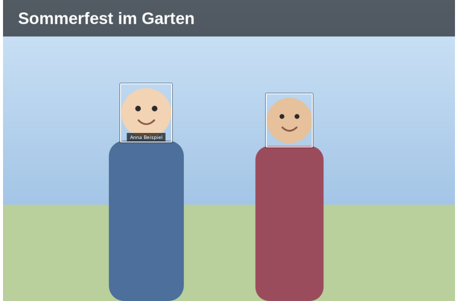
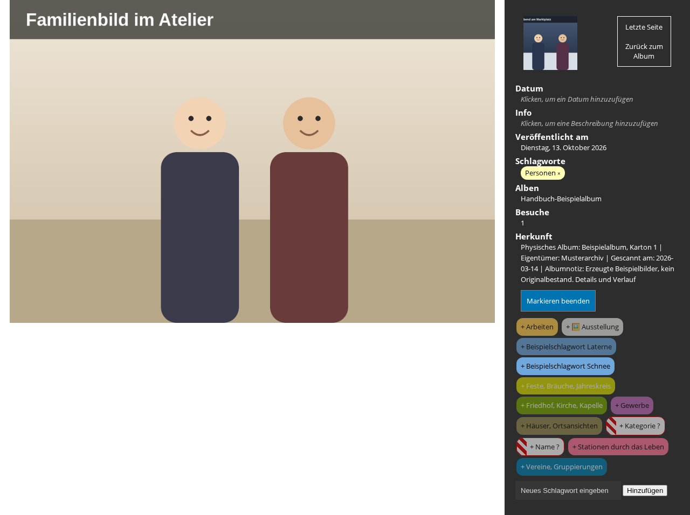
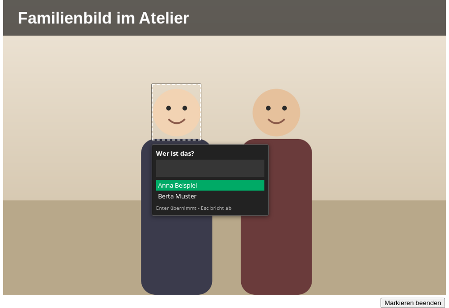
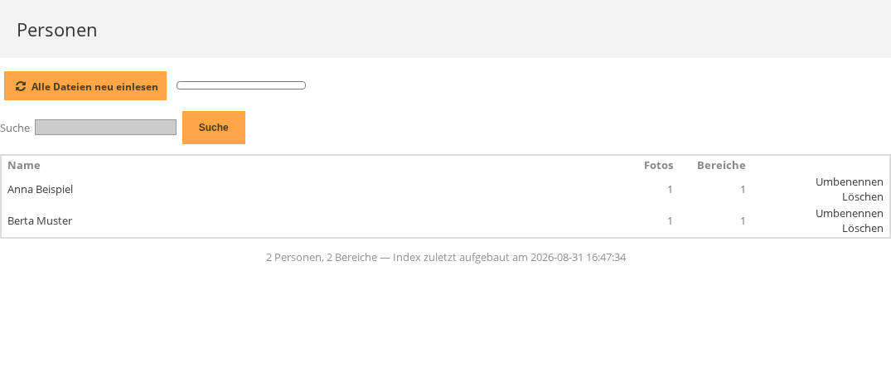

Auf einem Foto lässt sich ein Rechteck über ein Gesicht ziehen und mit einem Namen versehen. Danach ist die Person im Bild beschriftet und über ihren Namen sind alle Fotos zu finden, auf denen sie markiert ist. Das geht auf der Fotoseite und steht jedem angemeldeten Benutzer offen. Nicht angemeldete Besucher sehen die Galerie gar nicht, sondern nur die Anmeldeseite.
Die Rahmen erscheinen erst, wenn der Mauszeiger auf dem Foto steht, und zunächst ohne Namen. Steht der Mauszeiger in einem Rahmen, erscheint am unteren Rand des Rahmens der Name der Person. Ein Klick auf den Namen führt zu allen Fotos dieser Person.
Alle markierten Personen eines Fotos stehen außerdem in der Zeile Personen in den Angaben rechts neben dem Foto. Auf einem Tablet oder Smartphone gibt es keinen Mauszeiger, dort sind die Namen nur in dieser Zeile zu sehen und anzuklicken.

Ein gestrichelter, halb durchsichtiger Rahmen bedeutet: die Markierung wurde auf einer anders zugeschnittenen Fassung des Fotos gesetzt und sitzt deshalb vermutlich nicht mehr an der richtigen Stelle. Zeigt der Mauszeiger auf den Namen am Rahmen (im Markierungsmodus: auf eine beliebige Stelle des Rahmens), erscheint der Kurzhinweis Der Bereich ist womöglich veraltet: das Bild wurde nach der Markierung zugeschnitten. Ein reines Verkleinern des Fotos löst das nicht aus, nur ein veränderter Bildausschnitt. Solche Rahmen lassen sich löschen und neu ziehen.
Wird das Foto vergrößert (siehe Die Fotoseite), bleiben die Rahmen auf den Gesichtern.
Ein kleines Gesicht lässt sich genauer markieren, wenn das Foto vorher vergrößert wird. Da im Markierungsmodus die gedrückte Maustaste ein Rechteck aufzieht, lässt sich das vergrößerte Foto dann nur mit dem Mausrad oder den Bildlaufleisten verschieben.


Enter übernimmt den hervorgehobenen Eintrag der Liste, nicht den Text im Feld. Der erste Eintrag ist immer hervorgehoben, auch bei leerem Feld, und ein ähnlicher vorhandener Name steht vor Anlegen "...". Für einen neuen Namen Anlegen "..." mit Pfeiltaste oder Klick wählen.
Wurde im Markierungsmodus eine Person markiert oder entfernt, lädt die Seite beim Verlassen des Modus neu, ob über Markieren beenden oder über Esc. Erst danach sind die Namen in der Zeile Personen anklickbar und erst dann steht eine neu markierte Person auch in der Zeile Schlagworte. Wurde nichts geändert, lädt die Seite nicht neu.
Jede markierte Person ist zugleich ein gewöhnliches Schlagwort. Es gibt daher zwei Wege zu allen Fotos einer Person:
Der Name einer Person erscheint deshalb für jeden angemeldeten Benutzer in der Zeile Schlagworte und auf der Schlagwortseite.
Dieses Schlagwort hängt an der Markierung. Solange die Person auf einem Foto markiert ist, lässt es sich dort nicht abnehmen: Auf der Fotoseite fehlt das x, und in den Eigenschaften oder in der Stapelverarbeitung setzt die Galerie es beim Speichern wieder ein, speichert die übrigen Änderungen und zeigt eine Meldung. Entfernt wird es, indem man die Markierung löscht. Ist die Person auf einem Foto nicht markiert, lässt sich ihr Schlagwort dort wie jedes andere entfernen.
In der Schlagwortverwaltung lässt sich das Schlagwort einer Person weder löschen noch beim Zusammenführen entfernen. Es verschwindet erst mit der Person, die der Webmaster auf der Seite Personen löscht (siehe unten).
Markierungen werden in die Bilddatei selbst geschrieben. Kann der Server das nicht, bleibt Personen markieren sichtbar, ist aber ausgegraut und trägt den Kurzhinweis Dieser Server kann keine Metadaten in Bilddateien schreiben. Vorhandene Markierungen sind dann weiterhin zu sehen, neue lassen sich nicht setzen. In dem Fall den Webmaster benachrichtigen.
Weil die Markierungen in der Bilddatei stehen, wandern sie mit dem Foto mit: wer die Datei herunterlädt oder weitergibt, gibt die Namen mit. Andere Programme, die denselben Standard lesen, zeigen dieselben Personen an.
Die Seite Personen
(admin.php?page=plugin-persons) führt alle Personen auf. Sie hat keinen eigenen
Eintrag in der Seitenleiste. Zu erreichen ist sie über
Verwaltung » Plugins: dort beim Eintrag
Persons auf Einstellungen klicken. Die Seite ist Administratoren
vorbehalten. Umbenennen, Löschen und
Alle Dateien neu einlesen kann nur der Webmaster; andere
Administratoren sehen die Liste ohne diese Schaltflächen.

Unter der Liste steht, wie viele Personen und Bereiche es gibt und wann die Liste zuletzt neu aufgebaut wurde.